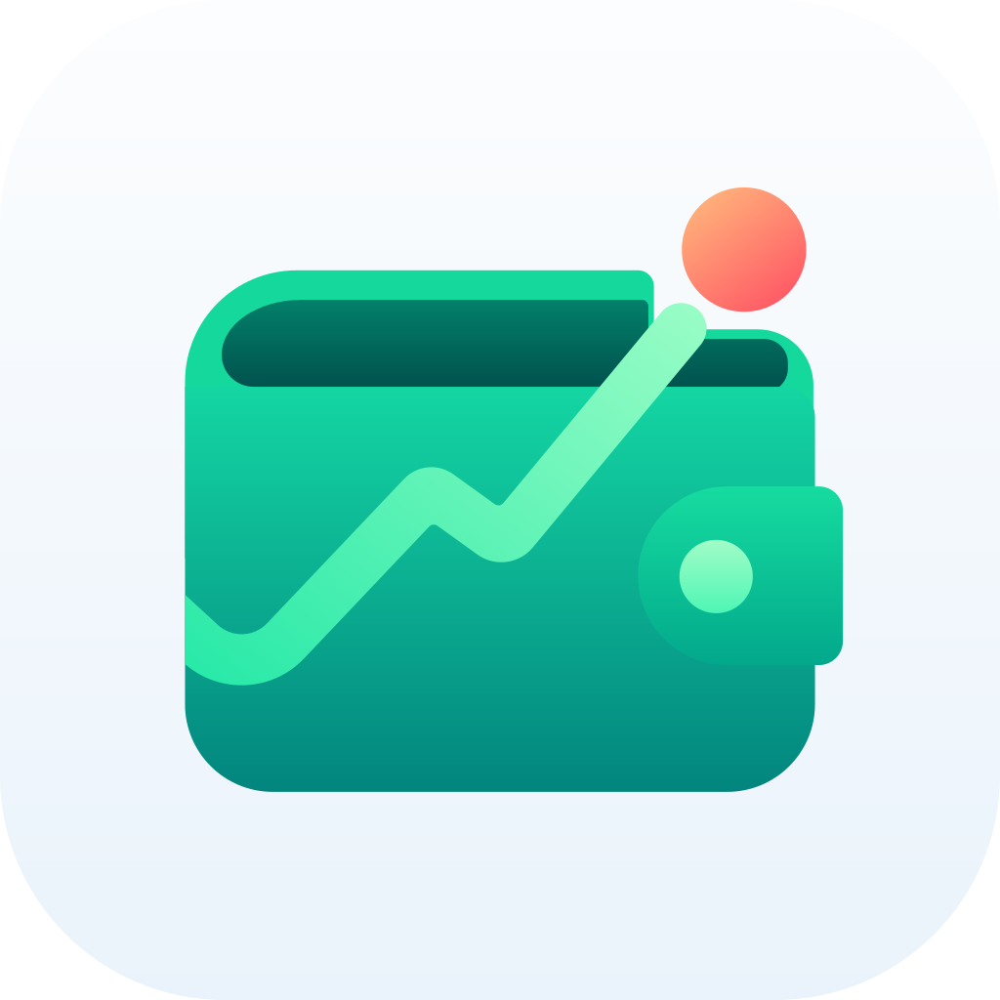

BolsilloPrivacy Policy
Effective October 8, 2026
In short
Bolsillo doesn't collect any data about you. There's no account, no analytics, no advertising and no tracking. Your accounts, movements, budgets and shopping lists stay on your devices and, if you turn on iCloud sync, in your own iCloud account.
What the app keeps, and where
On your device
Your accounts and balances, movements, categories, recurring movements, budget, shopping lists, currencies and exchange rates. They're stored on your device and included in your device backups (iCloud Backup or a backup on your computer), which are handled by Apple or by your computer. The developer has no access to them. Menu › Clear All Data deletes them, and so does deleting the app.
In your iCloud account, only if you turn on sync
With Bolsillo Premium and Menu › iCloud Sync turned on, your accounts, movements, transfers, categories, recurring movements, budget, shopping lists and choice of main currency are kept in your private iCloud database (CloudKit), so they're the same on every device signed in to your Apple Account. This data is stored by Apple in your iCloud account under Apple's Privacy Policy. The developer has no access to it. Exchange rates aren't synced; each device fetches its own. You can turn sync off at any time, and delete the app's iCloud data in your device's iCloud settings. While sync is on, Clear All Data also deletes the data from iCloud and your other devices.
Purchases
Bolsillo Premium is bought through the App Store and handled by Apple. The app checks the purchase on your device and never sees your payment details.
Exchange rates
To keep rates up to date, the app downloads public reference rates from Frankfurter (api.frankfurter.dev) and, for the bolívar, reads the official rate from the website of the Banco Central de Venezuela (bcv.org.ve). These requests only ask for rates; they contain none of your data. As with any website, those servers receive your device's IP address.
Microphone and speech recognition
When you add a movement by voice, the microphone is used only while you're speaking, and what you say is transcribed on your iPhone. On devices with Apple Intelligence, the on-device model may help read the transcript. Audio and transcripts aren't stored or sent anywhere.
Camera and photos
The camera, or a photo you pick, is used only to read product names and prices in a shopping list. Text is recognized on your iPhone. Images aren't stored or uploaded.
Widgets
The widgets show a summary that the app saves in a space on your iPhone shared only with them.
Third parties
The app contains no third-party code, analytics, advertising or tracking. It doesn't share or sell any data, because it doesn't collect any.
Children
Bolsillo is suitable for everyone and collects no personal information from anyone, including children.
Changes
If this policy changes, the new version will be posted on this page with a new effective date.
Contact
Bolsillo is made by Jesus Molina. For questions about privacy, email colgat3666@proton.me.